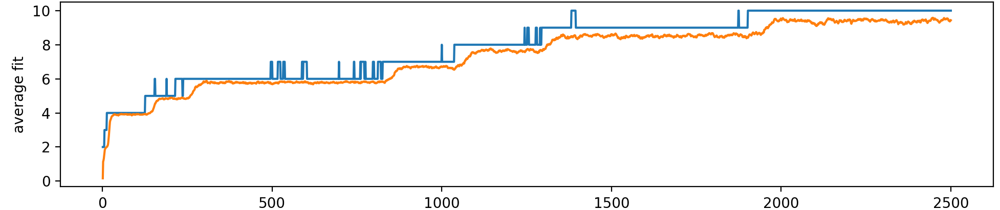
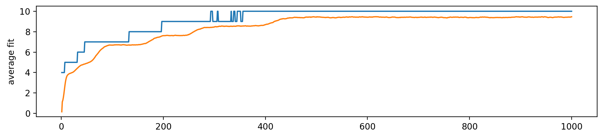
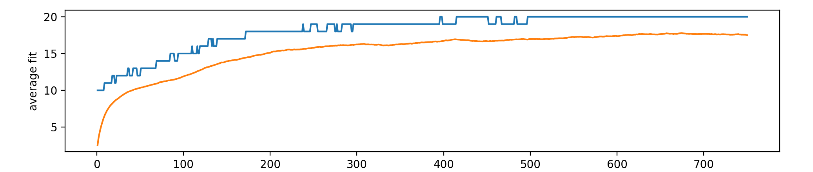
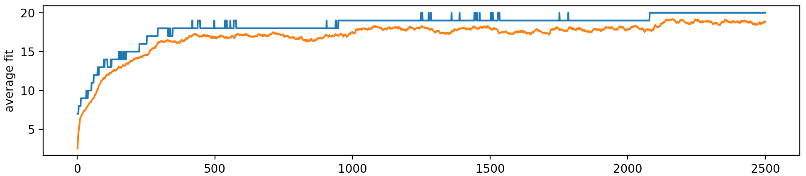
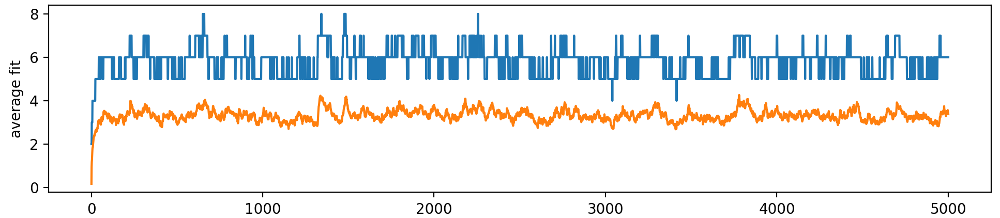
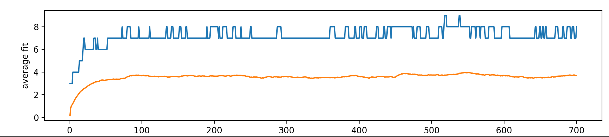
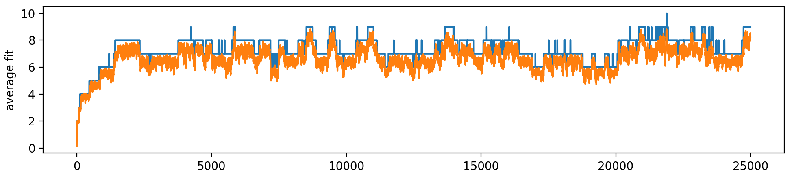
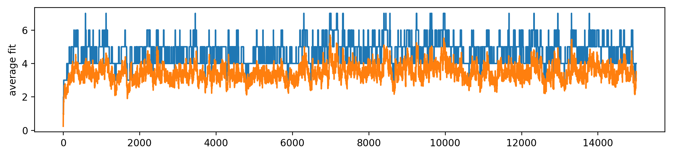
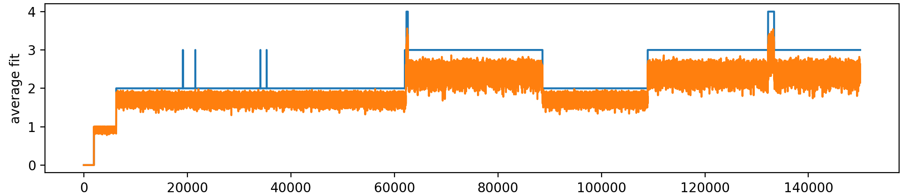

FIGURE 01
Canonical
The canonical example that the following graphs deviate from. N = 10, K = 6, M = 500, q = 0.0001.
This project explores the behavior of genetic algorithms through implementations from scratch, computational experiments, and comparisons with established optimization frameworks. The goal is to understand how evolutionary operators and population structure influence optimization and the emergence of complex solutions.
The experiments investigate relationships between fitness, mutation, selection, and population diversity, as well as the application of evolutionary optimization to gene regulatory networks. The figures below present the experimental results, with each section describing the question being investigated and the interpretation of the resulting data.
Each figure examines a different set up parameters and their effect on the epochal behavior of the evolutionary dynamics. Epochal behavior is characterized by extended periods without change in fitness, followed by faster jumps. N is the gene count. K is the gene length. The total genome length is constant so N*K = 60. M is the size the population. q is the muation rate. Each graph plots the number of iterations against the average fitness in orange and the best fitness in blue. The parameters from the the first graph will be altered one by one in the following graphs.

The canonical example that the following graphs deviate from. N = 10, K = 6, M = 500, q = 0.0001.

Track variation among individuals throughout evolution. Diversity measurements help characterize population homogenization and the exploration of alternative solutions.

Investigate how mutation settings affect exploration of the search space and the retention of useful genetic material. Compare the observed behavior across experimental configurations.

Explore how the selection operator changes the composition of the population. Relate selection behavior to fitness differences and the persistence of candidate solutions.

Compare optimization performance against an established implementation such as pymoo. Use consistent objective functions, evaluation budgets, and experimental conditions to interpret differences in performance.

Examine how algorithm settings influence the resulting fitness distributions and convergence behavior. Repeated runs help distinguish systematic effects from stochastic variation.

Visualize changes in gene regulatory network topology as candidate networks evolve. Examine how interaction structure and regulatory parameters relate to the optimization objective.

Compare simulated spatial expression with the target pattern used by the fitness function. This illustrates how the search process evaluates candidate regulatory mechanisms against a desired outcome.

Examine the temporal behavior of an evolved network through its simulated trajectories. Relate the observed dynamics to network structure, interaction parameters, and the stability of the resulting expression.
Taken together, these experiments provide a framework for studying how evolutionary operators shape the optimization process and how those processes can be applied to dynamical systems. The results also help distinguish improvements in the numerical objective from changes in the underlying structure and behavior of evolved networks.
The interpretation of each experiment depends on its experimental conditions, evaluation criteria, and observed variability. The figures should therefore be considered alongside their associated parameters and repeated-run results.